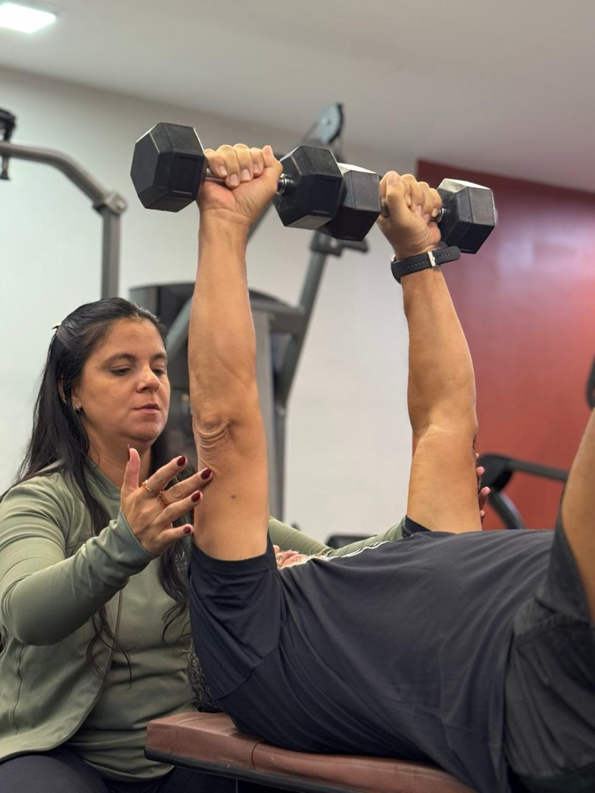
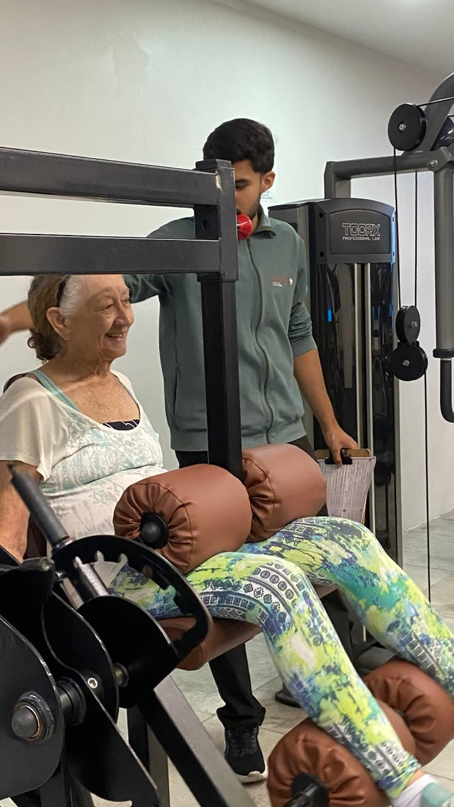
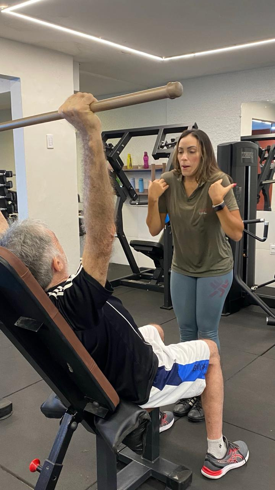
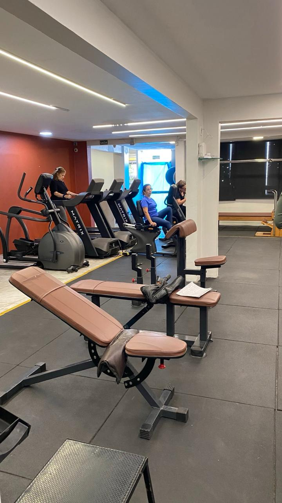
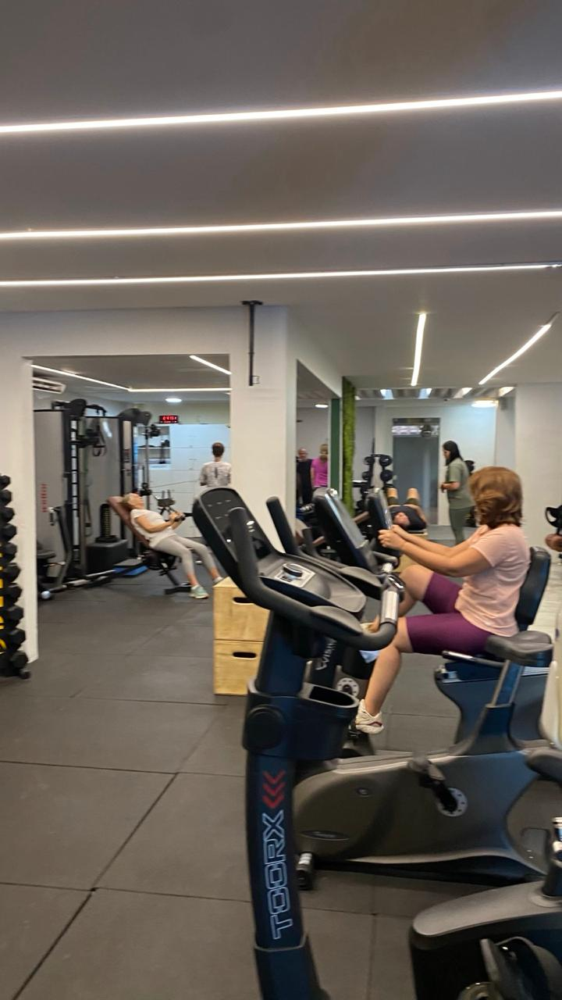
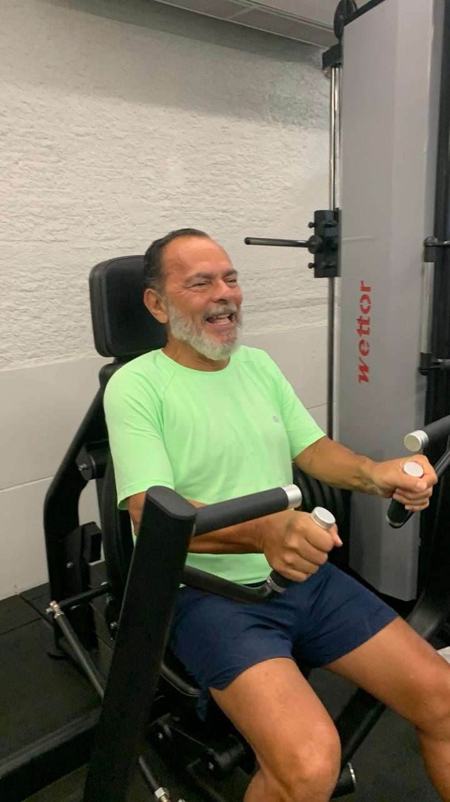
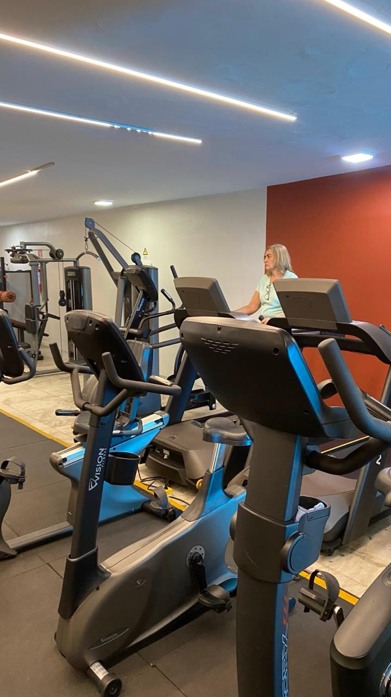

Mapeamento de Qualidade de Vida
Diagnóstico inicial 360°: saúde física, clínica e emocional.
EVERYLIFE STUDIO PERSONAL
Saúde, autonomia e qualidade de vida através do exercício.
Quero conhecer a EverylifeFortaleza · Dionísio Torres

QUEM SOMOS
A Everylife Studio Personal nasceu com o propósito de ajudar pessoas a viverem seus melhores anos com mais saúde, autonomia e qualidade de vida.
Mais do que treino, oferecemos acompanhamento individualizado, cuidado multidisciplinar e uma metodologia exclusiva focada na saúde física, clínica e emocional.
Cada etapa sustenta a evolução de longo prazo — sem pressa, sem genéricos.

MÉTODO EVERYLIFE
Bem-vinda(o) à sua melhor versão. Sua jornada começa com cinco passos: conhecer você, montar uma estratégia, acompanhar sua evolução, evoluir com segurança e fazer parte.
Diagnóstico inicial 360°: saúde física, clínica e emocional.
Uma linha de base para entender seu momento.
Um plano desenhado para você.
Um time integrado por trás de cada sessão.
Ajustes a cada novo ciclo.
Saúde como prática para a vida.
PARA QUEM É
Um espaço pensado para quem entende que o movimento certo, feito com cuidado, é o melhor investimento em si mesmo.


O QUE TORNA A EVERYLIFE DIFERENTE
O QUE ESTÁ INCLUSO
Saúde física, clínica e emocional.
Um profissional dedicado a cada sessão.
A cada 2 meses, ajustes precisos.
A cada 4 meses, evolução mensurada.
Postura e pontos de dor sob olhar clínico.
Composição corporal, adipometria e perimetria.
RESULTADOS
Mais energia para a rotina e para o que importa.
Massa muscular preservada — base da longevidade.
Movimento devolvendo qualidade ao cotidiano.
Amplitude e liberdade para o corpo se mover.
Acolhimento, escuta e pertencimento.
Independência em cada gesto, em cada idade.
NOSSOS PLANOS
Planos pensados para quem busca consistência e cuidado contínuo, com a liberdade de escolher o ritmo ideal.
PLANO MENSAL
R$ 997
por mês · sem fidelidade
Comece o acompanhamento individualizado com flexibilidade total.
Quero saber maisPLANO ANUAL · 12 MESES RECOMENDADO
R$ 697
por mês · até 3x por semana
O caminho mais consistente — economia significativa e evolução sustentada.
Quero saber maisConsulte a equipe para conhecer os detalhes e confirmar disponibilidade.
A EXPERIÊNCIA
Conheça o studio e converse com a equipe sobre uma visita.
Agende uma visitaImagens do espaço Everylife.



NOSSO DIA A DIA
Um cuidado que une saúde, bem-estar e relacionamento — com acolhimento, presença e movimento.
Acompanhe a Everylife no Instagram
PRÓXIMO PASSO
Conte à equipe o que você busca e converse sobre o cuidado Everylife.
Instagram @everylifeoficial ↗Fortaleza · Dionísio Torres
DÚVIDAS FREQUENTES
A equipe pode ajudar você a entender cada etapa.
A jornada começa com o Mapeamento de Qualidade de Vida e avaliações físicas e funcionais. A partir desse ponto, o treinamento é personalizado e acompanhado de perto.
O material institucional apresenta treino personalizado, reavaliação do protocolo a cada dois meses, avaliação de força a cada quatro meses e avaliações periódicas com fisioterapeuta e nutricionista.
O material atual apresenta um plano mensal sem fidelidade e um plano anual de 12 meses, com frequência de até três vezes por semana. Fale com a equipe para confirmar os detalhes e a disponibilidade.
Entre em contato pelo Instagram ou solicite uma conversa nesta página para combinar uma visita.


